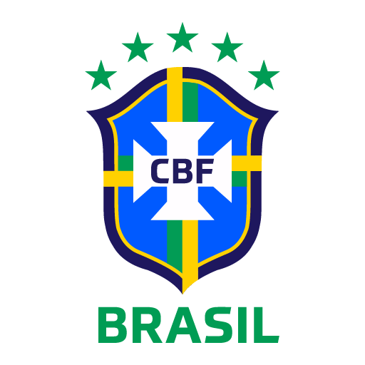

A SELEÇÃO
Oficialmente, a Seleção Brasileira de futebol surgiu em 1914, na mesma época em que também surgia a Confederação Brasileira de Futebol (CBF).
Desde então, é uma das seleções de maior destaque internacional, sendo a única a acumular cinco campeonatos mundias e participação em todas as Copas organizadas.
Entre 1958 e 1970, a Seleção Brasileira viveu uma verdadeira Era de Ouro, conquistando seus três primeiros títulos. Desde então, passou por diferentes fases, com destaque para as esquipes que conquistaram títulos em 94 e 2002.
TITULOS MUNDIAIS
O primeiro título mundial da Seleção Brasileira aconteceu em 1958, a na Copa da Suécia. Os brasileiros venceram os anfitriões por 5 a 2 e deram início a uma Era de Ouro para a equipe. Logo na Copa seguinte, desta vez no Chile, o Brasil ganhou o bicampeonato ao bater a Checoslováquia na final.
Enfim, em 2002, o Brasil conseguiu seu último título. Além de marcar o primeiro pentacampeonato da história, a Copa também se destacou por ser a primeira disputada em duas sedes, Coreia do Sul e Japão.